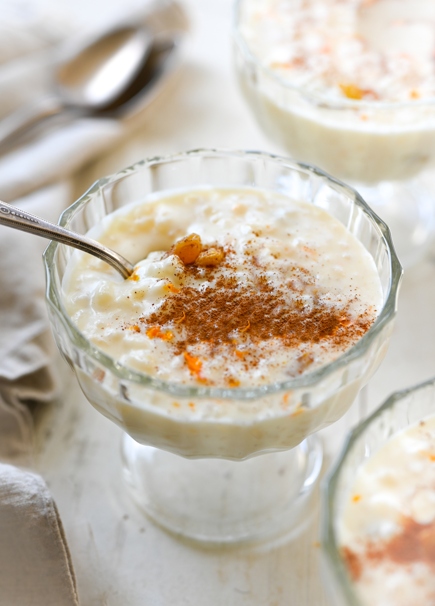

Rice Pudding

Description
Rice pudding is a creamy mixture of rice and milk that is cooked until it's thick and soft. It can be sweet or savory. This raisin-studded dessert rice pudding is thickened with an egg, sweetened with sugar, and enhanced with vanilla.
Ingredients
- 1½ cups cold water
- ¾ cup uncooked white rice
- 2 cups milk, divided
- ⅓ cup white sugar
- ¼ teaspoon salt
- 1 egg, beaten
- ⅔ cup golden raisins
- 1 tablespoon butter
- ½ teaspoon vanilla extract
Steps
- Pour water into a saucepan and bring to a boil over medium heat; stir in rice. Reduce heat to low, cover, and simmer until rice is tender and liquid has been absorbed, about 20 minutes.
- Combine cooked rice, 1 1/2 cups milk, sugar, and salt in a clean saucepan. Cook over medium heat, stirring often, until thick and creamy, about 15 minutes.
- Stir in remaining 1/2 cup milk, beaten egg, and raisins; cook 2 minutes more, stirring constantly. Remove from heat and stir in butter and vanilla until combined; serve warm.
Homepage